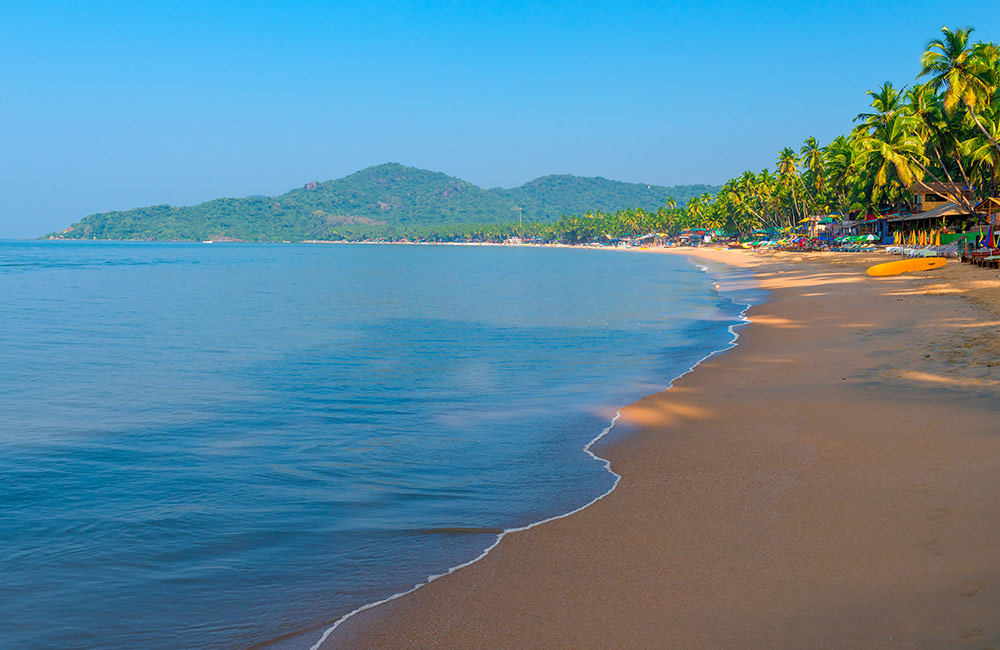
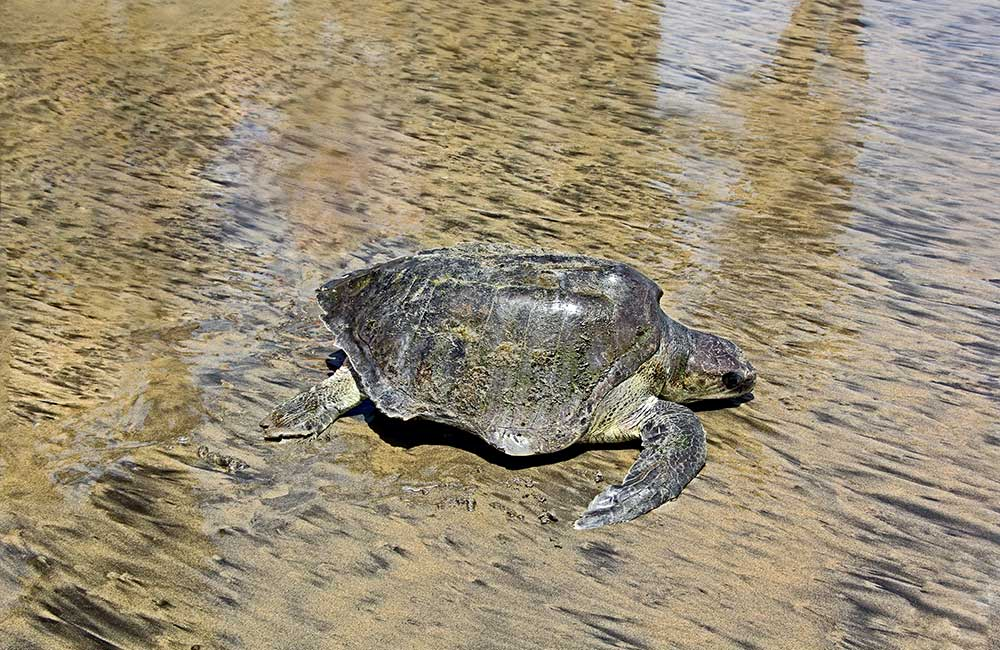

Overlooking the mighty yet gently-flowing Mandovi River, Panjim is Goa’s capital as well as the heart. It is a unique concoction of idyllic charm and lively events, with cobblestone streets, Portuguese colonial-era buildings, and lush acacia and Gulmohar trees beckoning tourists from far and wide. From serene beaches and quaint churches to impressive forts, pretty temples and even museums, Panjim or Panaji has everything that your heart seeks on a vacation. So, take a look at the 25 best places to visit in Panjim, Goa, and start planning that perfect itinerary.
1. Palolem Beach, South Goa
Located on the southwestern coast of India, Goa is one of the top tourist destinations in the country. This erstwhile Portuguese colony is best known for its serene beaches, forts and churches that date back to the colonial era, wildlife sanctuaries, museums, and rich culinary legacy. Goa also boasts of vibrant nightlife, thanks to the many beach shacks, pubs, and clubs dotting the region. What’s more, it is the only Indian state where you can find floating casinos.

One of the most spectacular beaches in South Goa, Palolem welcomes you to its golden sand and spellbinding scenic views. Dotted with vibrant beach shacks and swaying palm trees, the place exudes a chilled-out party vibe. Whether you are looking for adventurous activities and water sports or just a relaxed day under the sun, Palolem fits the bill perfectly. There’s more! The beach market at Palolem, which is organized every Saturday, gives you an opportunity to experience the lively shopping culture Goa is known for.
2. Agonda Beach, South Goa

A lesser-known beach in the southern region, Agonda is beauty at its best form. The pristine shoreline of this beach is peppered with pretty cottages and shacks. Casuarinas and palms further add to its splendid beauty. It is also one of the four beaches marked as turtle nesting sites, which gives you all the more reasons to visit Agonda. When you are in a mood to relax and rejuvenate, make your way to Agonda and you will come back as a happier version of yourself.